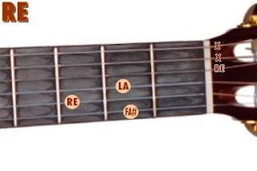
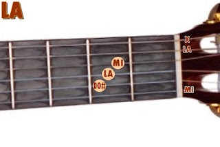

Colocá los dedos donde indican los puntos amarillos, y rasgueá con los dedos:
ACORDE DE RE
ACORDE DE LA
ACORDE DE SOL

Colocá los dedos donde indican los puntos amarillos, y rasgueá con los dedos:
Listo? Lo tenés? Ahora acompañate con este video y disfrutá. Sólo estos 3 acordes que aprendiste